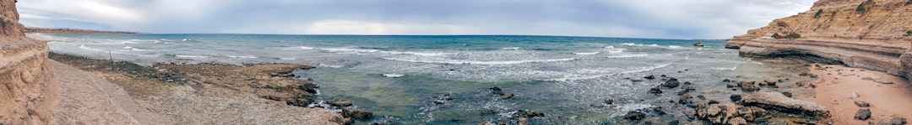

For homeowners and property managers comparing waterproofing adelaide options, the useful starting point is the surface involved, the visible symptom, and what a licensed contractor will inspect before quoting.
Waterproofing Adelaide Explained
Pro Waterproofing Adelaide presents waterproofing as an inspection-led job rather than a product chosen from a shelf. That framing is useful because a leaking shower, a tiled balcony, a basement wall and a roof deck can all show moisture in one place while the entry point sits somewhere else.
The published service list spans residential and commercial work, external waterproofing, membranes, bathrooms, showers, balconies, basements, retaining walls, roof decks, and leak detection and repair. For a reader, the practical move is to describe the affected area clearly before asking for a method. A bathroom or laundry may raise wet-area compliance questions. A balcony or roof deck may require membrane repair or replacement. A below-ground space may involve tanking, sump systems or hydrostatic pressure control.
Useful details to prepare before an inspection include:
- the room, wall, deck or structure where moisture appears
- whether the surface is tiled, concrete, below ground or exposed to weather
- recent renovation, resealing, plumbing or movement history
- photos of staining, swollen joinery, damp patches or failed grout lines
- whether access is available above, below or behind the affected area
Wet Areas, Balconies and Below-Ground Spaces
The published service descriptions separate domestic wet areas from outdoor and structural jobs, which helps avoid vague quotes. Bathroom waterproofing is described for bathrooms, laundries and WC areas to AS 3740. Shower work includes leaking shower diagnosis, membrane reinstatement and resealing. Those are different tasks, so the quote should say whether the contractor is treating a surface failure, reinstating a membrane, or completing a broader wet-area system.
Balcony waterproofing is described for tiled and concrete balcony membrane repair and replacement. In Adelaide coastal suburbs named in the business information, including Glenelg and Henley Beach, outdoor membranes are discussed alongside salt-laden air, wind and UV exposure. That does not prove a fault by itself, but it gives a sensible inspection prompt for balconies, terraces, roof decks and outdoor showers.
Basements and retaining walls sit in another category. The published service text refers to below-ground tanking, sump systems, hydrostatic pressure control, and positive-side and negative-side membrane systems. A property owner does not need to diagnose those systems before calling, but should ask the contractor to identify the water path, the accessible side of the structure, and whether repair is targeted or system-wide.
Who This Applies To
This guide is most relevant to homeowners, renovators, landlords, strata managers and commercial property managers dealing with moisture in Adelaide properties. The business information says work is available for homes, units, renovation projects, commercial properties, strata and managed properties. Decision-making changes when a bathroom is owner occupied, a balcony is part of a strata scheme, or a basement car park affects multiple users.
For renovation work, ask how the membrane will meet the required wet-area standard and how the scope will be documented before tiling or finishing. For managed properties, ask what investigation is needed before tenants, owners or trades coordinate access. For commercial and strata work, a written scope helps separate leak detection, temporary containment, repair method, warranty terms and reinstatement responsibilities.
There is also a companion guide for readers comparing waterproofing contractors in Adelaide, with a contractor-selection angle rather than a surface-by-surface overview.
What a Written Quote Should Clarify
The described enquiry path moves from project details to site inspection, then a clear scope, price and warranty terms in writing before work begins. That sequence gives property owners a simple benchmark for comparing proposals without needing to know every membrane product.
A useful quote should name the area, the suspected cause, the preparation work, the waterproofing approach, and what is excluded. For wet areas, ask how AS 3740 compliance is being addressed. For balconies and roof decks, ask whether the work is repair, replacement or a broader membrane system. For basements and retaining walls, ask whether the contractor is proposing positive-side, negative-side or another described approach, and why access conditions support it.
Warranty language should also be read carefully. The business information says full membrane installations are backed by a written workmanship warranty from the contractor. That is narrower than assuming every investigation, seal, patch or repair carries the same coverage. Ask which part of the job is covered, who provides the warranty, and what maintenance or access conditions may affect it.
Local Context Without Guesswork
The Adelaide examples in the published business information connect property type and exposure to inspection questions. Adelaide CBD is described as having heritage terraces, modern apartments and commercial buildings, with demand across unit balconies, basement car parks and renovated wet areas in older stock. Norwood, Prospect, North Adelaide, Goodwood and Fullarton are linked with character homes, renovation activity or older wet areas.
Foothills and sloping-site examples are also noted. Magill is associated with retaining-wall and basement waterproofing demand. Campbelltown is associated with renovation wet-area work and retaining-wall needs. Burnside is described with seasonal runoff, clay soils, older wet areas and underground spaces. These are not automatic diagnoses. They are prompts for a more precise inspection brief.
For coastal locations such as Glenelg, Henley Beach and Semaphore, the business information points to exposure from salt, wind, sand or UV as relevant to outdoor membranes. A practical enquiry might therefore describe how exposed the balcony, terrace, roof deck or outdoor shower is, whether the surface is tiled or concrete, and whether previous membrane work is known.
- Describe the symptom. Note where moisture appears, what surface is affected, and whether the problem follows rain, shower use or another trigger.
- Request inspection. Use the inspection stage to have the contractor identify the likely leak source before accepting a method.
- Compare the written scope. Check that the quote names the area, preparation, waterproofing work, price, exclusions and warranty terms.
- Confirm compliance needs. For bathrooms, laundries and WC areas, ask how AS 3740 wet-area requirements are being handled.
- Keep records. Store photos, the written quote, warranty wording and any maintenance notes with the property file.
| Situation | Useful inspection focus | Quote question |
|---|---|---|
| Bathroom, laundry or WC | Wet-area membrane and AS 3740 compliance | Will the written scope identify preparation, membrane work and finishing exclusions? |
| Leaking shower | Diagnosis, membrane reinstatement or resealing | Is this a targeted repair or a broader membrane reinstatement? |
| Balcony or roof deck | Tiled or concrete surface, exposed membrane condition | Does the quote cover repair, replacement or a full membrane system? |
| Basement or retaining wall | Water path, access side and pressure control | Why is the proposed positive-side, negative-side or tanking approach suitable? |
| Commercial, strata or managed property | Access, documentation and affected users | How will investigation, repair scope and warranty terms be recorded? |
This guide covers local waterproofing scope checks for wet areas, balconies, basements, retaining walls, roof decks and managed properties.